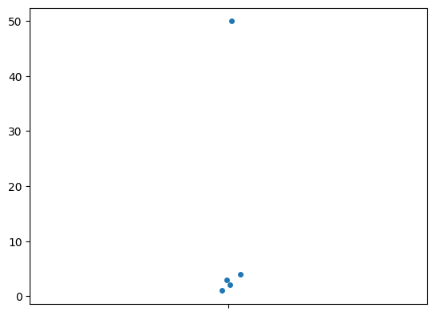

Appendix D — Pandas tutorial#
TODO: intro
Pandas overview#
Installing Pandas#
First let’s make sure pandas is installed using the %pip Jupyter command.
# %pip install pandas
We then import the pandas library as the alias pd.
import pandas as pd
Series#
Pandas pd.Series objects are similar to Python lists [3,5,7,9].
They are containers for series of values.
s = pd.Series([3, 5, 7, 9])
s
0 3
1 5
2 7
3 9
dtype: int64
Python lists use integers for identifying the elements of the list
(first = index 0, second = index 1, last = index len(self)-1).
Pandas series support the same functionality. Here are some example of accessing individual values of the series using the default 0-base indexing.
print("First: index =", 0, " value =", s[0])
print("Second: index =", 1, " value =", s[1])
print("Last: index =", len(s)-1, " value =", s[len(s)-1])
First: index = 0 value = 3
Second: index = 1 value = 5
Last: index = 3 value = 9
The series index attribute tells you all the possible indices for the series.
s.index
RangeIndex(start=0, stop=4, step=1)
list(s.index)
[0, 1, 2, 3]
The series s uses the default index [0, 1, 2, 3],
which consists of a range of integers, starting at 0,
just like the index of a Python list with four elements.
s.values
array([3, 5, 7, 9])
type(s.values)
numpy.ndarray
In addition to accessing individual elements like this,
s[0]
3
we can also “slice” a series to obtain a new series that contains indices and values of the slice:
s[0:3]
0 3
1 5
2 7
dtype: int64
Performing arithmetic operations on the series.
s.sum()
24
s / s.sum()
0 0.125000
1 0.208333
2 0.291667
3 0.375000
dtype: float64
s.mean()
6.0
s.std()
2.581988897471611
We can also use arbitrary functions from numpy on a series,
and Pandas will apply the function to the values in the series.
import numpy as np
np.log(s)
0 1.098612
1 1.609438
2 1.945910
3 2.197225
dtype: float64
Bonus material 1#
# a series of float values
s2 = pd.Series([0.3, 1.5, 2.2])
s2
0 0.3
1 1.5
2 2.2
dtype: float64
# a series of categorical values
s3 = pd.Series(["a", "b", "b", "c"])
s3
0 a
1 b
2 b
3 c
dtype: object
Bonus material 2#
Pandas series allow arbitrary labels to be used as the index, not just integers.
For example, we can use an series index that consists of string labels like ("x", "y", etc.).
s4 = pd.Series(index=["x", "y", "z", "t"],
data =[ 3, 5, 7, 9 ])
s4
x 3
y 5
z 7
t 9
dtype: int64
s4.index
Index(['x', 'y', 'z', 't'], dtype='object')
s4.values
array([3, 5, 7, 9])
We can now use the string labels to access individual elements of the series.
s4["y"]
5
In other words,
Pandas series also act like Python dictionary objects with arbitrary keys.
Indeed any quantity that can be used as a key in a dictionary (a Python hashable object),
can also be used as a label in a Pandas series.
The list of keys of a Python dictionary is the same as the index of a Pandas series.
Data frames#
Loading the dataset minimal.csv
# !cat "../datasets/minimal.csv"
df = pd.read_csv("../datasets/minimal.csv")
df
| x | y | team | level | |
|---|---|---|---|---|
| 0 | 1.0 | 2.0 | a | 3 |
| 1 | 1.5 | 1.0 | a | 2 |
| 2 | 2.0 | 1.5 | a | 1 |
| 3 | 2.5 | 2.0 | b | 3 |
| 4 | 3.0 | 1.5 | b | 3 |
df.dtypes
x float64
y float64
team object
level int64
dtype: object
Data frame properties#
type(df)
pandas.core.frame.DataFrame
df.index
RangeIndex(start=0, stop=5, step=1)
list(df.index)
[0, 1, 2, 3, 4]
df.columns
Index(['x', 'y', 'team', 'level'], dtype='object')
df.shape
(5, 4)
df.dtypes
x float64
y float64
team object
level int64
dtype: object
df.info(memory_usage="deep")
<class 'pandas.core.frame.DataFrame'>
RangeIndex: 5 entries, 0 to 4
Data columns (total 4 columns):
# Column Non-Null Count Dtype
--- ------ -------------- -----
0 x 5 non-null float64
1 y 5 non-null float64
2 team 5 non-null object
3 level 5 non-null int64
dtypes: float64(2), int64(1), object(1)
memory usage: 538.0 bytes
# df.axes
# df.memory_usage()
# df.values
Accessing and selecting values#
df.loc[2, "y"]
1.5
Selecting entire rows#
row2 = df.loc[2,:]
row2
x 2.0
y 1.5
team a
level 1
Name: 2, dtype: object
# Rows of the dataframe are Series objects
type(row2)
pandas.core.series.Series
row2.index
Index(['x', 'y', 'team', 'level'], dtype='object')
row2.values
array([2.0, 1.5, 'a', 1], dtype=object)
row2["y"]
1.5
Selecting entire columns#
ys = df["y"]
ys
0 2.0
1 1.0
2 1.5
3 2.0
4 1.5
Name: y, dtype: float64
df["y"].equals( df.loc[:,"y"] )
True
df["y"].equals( df.y )
True
type(ys)
pandas.core.series.Series
ys.index
RangeIndex(start=0, stop=5, step=1)
ys.values
array([2. , 1. , 1.5, 2. , 1.5])
ys[2]
1.5
Selecting multiple columns#
df[["x", "y"]]
| x | y | |
|---|---|---|
| 0 | 1.0 | 2.0 |
| 1 | 1.5 | 1.0 |
| 2 | 2.0 | 1.5 |
| 3 | 2.5 | 2.0 |
| 4 | 3.0 | 1.5 |
Selecting subsets of the data frame#
We rarely need to do this,
but for the purpose of illustration of the loc syntax,
here is the code for selecting the y and team columns
from the last two rows of the data frame.
df.loc[3:5, ["y","team"]]
| y | team | |
|---|---|---|
| 3 | 2.0 | b |
| 4 | 1.5 | b |
Selecting subsets of rows#
df.head(2)
# df.tail(2)
# df.sample(3)
| x | y | team | level | |
|---|---|---|---|---|
| 0 | 1.0 | 2.0 | a | 3 |
| 1 | 1.5 | 1.0 | a | 2 |
To select only rows where team is b, we first build the boolean selection mask…
mask = df["team"] == "b"
mask
0 False
1 False
2 False
3 True
4 True
Name: team, dtype: bool
… then select the rows using the mask.
df[mask]
| x | y | team | level | |
|---|---|---|---|---|
| 3 | 2.5 | 2.0 | b | 3 |
| 4 | 3.0 | 1.5 | b | 3 |
The above two step process can be combined into a more compact expression:
df[df["team"]=="b"]
| x | y | team | level | |
|---|---|---|---|---|
| 3 | 2.5 | 2.0 | b | 3 |
| 4 | 3.0 | 1.5 | b | 3 |
df[(df["team"] == "b") & (df["x"] >= 3)]
| x | y | team | level | |
|---|---|---|---|---|
| 4 | 3.0 | 1.5 | b | 3 |
df["level"].isin([2,3])
0 True
1 True
2 False
3 True
4 True
Name: level, dtype: bool
Creating data frames from scratch#
There are other ways to create a pd.DataFrame from Python data containers like dicts and lists.
Creating a data frame from a dictionary of columns:
dict_of_columns = {
"x": [1.0, 1.5, 2.0, 2.5, 3.0],
"y": [2.0, 1.0, 1.5, 2.0, 1.5],
"team": ["a", "a", "a", "b", "b"],
"level": [3, 2, 1, 3, 3],
}
df2 = pd.DataFrame(dict_of_columns)
df2
| x | y | team | level | |
|---|---|---|---|---|
| 0 | 1.0 | 2.0 | a | 3 |
| 1 | 1.5 | 1.0 | a | 2 |
| 2 | 2.0 | 1.5 | a | 1 |
| 3 | 2.5 | 2.0 | b | 3 |
| 4 | 3.0 | 1.5 | b | 3 |
# df2 is identical to df loaded from minimal.csv
df2.equals(df)
True
Creating a data frame from a list of records (lists or tuples):
list_records = [
[1.0, 2.0, "a", 3],
[1.5, 1.0, "a", 2],
[2.0, 1.5, "a", 1],
[2.5, 2.0, "b", 3],
[3.0, 1.5, "b", 3],
]
columns = ["x", "y", "team", "level"]
df3 = pd.DataFrame(list_records, columns=columns)
df3
| x | y | team | level | |
|---|---|---|---|---|
| 0 | 1.0 | 2.0 | a | 3 |
| 1 | 1.5 | 1.0 | a | 2 |
| 2 | 2.0 | 1.5 | a | 1 |
| 3 | 2.5 | 2.0 | b | 3 |
| 4 | 3.0 | 1.5 | b | 3 |
# df3 is identical to df loaded from minimal.csv
df3.equals(df)
True
Creating a data frame from a list of dicts:
dict_records = [
dict(x=1.0, y=2.0, team="a", level=3),
dict(x=1.5, y=1.0, team="a", level=2),
dict(x=2.0, y=1.5, team="a", level=1),
dict(x=2.5, y=2.0, team="b", level=3),
dict(x=3.0, y=1.5, team="b", level=3),
]
df4 = pd.DataFrame(dict_records)
df4
| x | y | team | level | |
|---|---|---|---|---|
| 0 | 1.0 | 2.0 | a | 3 |
| 1 | 1.5 | 1.0 | a | 2 |
| 2 | 2.0 | 1.5 | a | 1 |
| 3 | 2.5 | 2.0 | b | 3 |
| 4 | 3.0 | 1.5 | b | 3 |
# df4 is identical to df loaded from minimal.csv
df4.equals(df)
True
# Note dict(key="val") is just an alternative syntax for {"key":"val"}
dict(x=1.0, y=2.0, group="a", level=3) == {"x":1.0, "y":2.0, "group":"a", "level":3}
True
Exercises 1#
Sorting, grouping and aggregation#
df.groupby("team")
<pandas.core.groupby.generic.DataFrameGroupBy object at 0x7fd564e19d90>
df.groupby("team")["x"]
<pandas.core.groupby.generic.SeriesGroupBy object at 0x7fd564dc1280>
df.groupby("team")["x"].mean()
team
a 1.50
b 2.75
Name: x, dtype: float64
df.groupby("team")["x"].aggregate(["sum", "count", "mean"])
| sum | count | mean | |
|---|---|---|---|
| team | |||
| a | 4.5 | 3 | 1.50 |
| b | 5.5 | 2 | 2.75 |
df.groupby("team")["x"] \
.agg(["sum", "count", "mean"])
| sum | count | mean | |
|---|---|---|---|
| team | |||
| a | 4.5 | 3 | 1.50 |
| b | 5.5 | 2 | 2.75 |
(df
.groupby("team")["x"]
.agg(["sum", "count", "mean"])
)
| sum | count | mean | |
|---|---|---|---|
| team | |||
| a | 4.5 | 3 | 1.50 |
| b | 5.5 | 2 | 2.75 |
Data transformations#
Transpose#
The transpose of a matrix corresponds to flipping the rows and the columns.
dfT = df.transpose()
dfT
| 0 | 1 | 2 | 3 | 4 | |
|---|---|---|---|---|---|
| x | 1.0 | 1.5 | 2.0 | 2.5 | 3.0 |
| y | 2.0 | 1.0 | 1.5 | 2.0 | 1.5 |
| team | a | a | a | b | b |
| level | 3 | 2 | 1 | 3 | 3 |
# add the columns to the index; result is series with a multi-index
# df.stack()
# ALT. way to do transpose
# df.stack().reorder_levels([1,0]).unstack()
Adding new columns#
df["xy"] = df["x"] * df["y"]
print(df)
x y team level xy
0 1.0 2.0 a 3 2.0
1 1.5 1.0 a 2 1.5
2 2.0 1.5 a 1 3.0
3 2.5 2.0 b 3 5.0
4 3.0 1.5 b 3 4.5
# undo the modification
df = df.drop(columns=["xy"])
df2 = df.copy()
df2["xy"] = df["x"] * df["y"]
df2 = df.assign(xy = df["x"] * df["y"])
import numpy as np
df3 = df.assign(xy = df["x"] * df["y"]) \
.assign(z = 1) \
.assign(r = np.sqrt(df["x"]**2 + df["y"]**2)) \
.assign(team = df["team"].str.upper())
print(df3)
x y team level xy z r
0 1.0 2.0 A 3 2.0 1 2.236068
1 1.5 1.0 A 2 1.5 1 1.802776
2 2.0 1.5 A 1 3.0 1 2.500000
3 2.5 2.0 B 3 5.0 1 3.201562
4 3.0 1.5 B 3 4.5 1 3.354102
Dropping rows and and columns#
df.drop([0,2,4])
| x | y | team | level | |
|---|---|---|---|---|
| 1 | 1.5 | 1.0 | a | 2 |
| 3 | 2.5 | 2.0 | b | 3 |
df.drop(columns=["level"])
| x | y | team | |
|---|---|---|---|
| 0 | 1.0 | 2.0 | a |
| 1 | 1.5 | 1.0 | a |
| 2 | 2.0 | 1.5 | a |
| 3 | 2.5 | 2.0 | b |
| 4 | 3.0 | 1.5 | b |
Other related methods .dropna() for removing rows with missing values,
and .drop_duplicates() for removing rows that contain duplicate data.
Renaming columns and values#
To rename the columns of a data frame, we can use the .rename() method
with the columns attribute set to a Python dictionary of the replacements we want to make.
df.rename(columns={"team":"TEAM", "level":"LEVEL"})
| x | y | TEAM | LEVEL | |
|---|---|---|---|---|
| 0 | 1.0 | 2.0 | a | 3 |
| 1 | 1.5 | 1.0 | a | 2 |
| 2 | 2.0 | 1.5 | a | 1 |
| 3 | 2.5 | 2.0 | b | 3 |
| 4 | 3.0 | 1.5 | b | 3 |
To rename values, we can use the replace method,
passing in a dictionary of replacements we want to for each column.
team_mapping = {"a":"A", "b":"B"}
df.replace({"team":team_mapping})
| x | y | team | level | |
|---|---|---|---|---|
| 0 | 1.0 | 2.0 | A | 3 |
| 1 | 1.5 | 1.0 | A | 2 |
| 2 | 2.0 | 1.5 | A | 1 |
| 3 | 2.5 | 2.0 | B | 3 |
| 4 | 3.0 | 1.5 | B | 3 |
# # ALT. use str-methods to get uppercase letter
# df.assign(team = df["team"].str.upper())
Reshaping data frames#
views_data = {
"season": ["Season 1", "Season 2"],
"Episode 1": [1000, 10000],
"Episode 2": [2000, 20000],
"Episode 3": [3000, 30000],
}
tvwide = pd.DataFrame(views_data)
tvwide
| season | Episode 1 | Episode 2 | Episode 3 | |
|---|---|---|---|---|
| 0 | Season 1 | 1000 | 2000 | 3000 |
| 1 | Season 2 | 10000 | 20000 | 30000 |
tvlong = tvwide.melt(id_vars=["season"],
var_name="episode",
value_name="views")
tvlong
| season | episode | views | |
|---|---|---|---|
| 0 | Season 1 | Episode 1 | 1000 |
| 1 | Season 2 | Episode 1 | 10000 |
| 2 | Season 1 | Episode 2 | 2000 |
| 3 | Season 2 | Episode 2 | 20000 |
| 4 | Season 1 | Episode 3 | 3000 |
| 5 | Season 2 | Episode 3 | 30000 |
Let’s see the same thing now but sorted by season then by episode:
tvlong.sort_values( by=["season", "episode"]) \
.reset_index(drop=True)
| season | episode | views | |
|---|---|---|---|
| 0 | Season 1 | Episode 1 | 1000 |
| 1 | Season 1 | Episode 2 | 2000 |
| 2 | Season 1 | Episode 3 | 3000 |
| 3 | Season 2 | Episode 1 | 10000 |
| 4 | Season 2 | Episode 2 | 20000 |
| 5 | Season 2 | Episode 3 | 30000 |
The method for the opposite transformation (converting long data to wide data) is called pivot and works like this:
tvlong.pivot(index="season",
columns="episode",
values="views")
| episode | Episode 1 | Episode 2 | Episode 3 |
|---|---|---|---|
| season | |||
| Season 1 | 1000 | 2000 | 3000 |
| Season 2 | 10000 | 20000 | 30000 |
# # ALT. to get *exactly* the same data frame as `tvwide`
# tvlong.pivot(index="season",
# columns="episode",
# values="views") \
# .reset_index() \
# .rename_axis(columns=None)
String methods#
Merging data frames#
Type conversions#
Creating dummy variables from categorical variables#
Data cleaning#
Standardize categorical values#
pets = pd.Series(["D", "dog", "Dog", "doggo"])
pets
0 D
1 dog
2 Dog
3 doggo
dtype: object
dogsubs = {"D":"dog", "Dog":"dog", "doggo":"dog"}
pets.replace(dogsubs)
0 dog
1 dog
2 dog
3 dog
dtype: object
pets.replace(dogsubs).value_counts()
dog 4
Name: count, dtype: int64
Numerical values#
float("1.2")
1.2
float("1,2")
---------------------------------------------------------------------------
ValueError Traceback (most recent call last)
Cell In[89], line 1
----> 1 float("1,2")
ValueError: could not convert string to float: '1,2'
"1,2".replace(",", ".")
'1.2'
float("1. 2")
---------------------------------------------------------------------------
ValueError Traceback (most recent call last)
Cell In[91], line 1
----> 1 float("1. 2")
ValueError: could not convert string to float: '1. 2'
"1. 2".replace(" ", "")
'1.2'
rawns = pd.Series(["1.2", "1,2", "1. 2"])
rawns
0 1.2
1 1,2
2 1. 2
dtype: object
# rawns.astype(float)
rawns.str.replace(",", ".") \
.str.replace(" ", "") \
.astype(float)
0 1.2
1 1.2
2 1.2
dtype: float64
Use the .drop_duplicates() method to remove duplicated rows.
Dealing with missing values#
rawdf = pd.read_csv("../datasets/raw/minimal.csv")
rawdf
| x | y | team | level | |
|---|---|---|---|---|
| 0 | 1.0 | 2.0 | a | 3.0 |
| 1 | 1.5 | 1.0 | a | 2.0 |
| 2 | 2.0 | 1.5 | a | 1.0 |
| 3 | 1.5 | 1.5 | a | NaN |
| 4 | 2.5 | 2.0 | b | 3.0 |
| 5 | 3.0 | 1.5 | b | 3.0 |
| 6 | 11.0 | NaN | NaN | 2.0 |
rawdf.info()
<class 'pandas.core.frame.DataFrame'>
RangeIndex: 7 entries, 0 to 6
Data columns (total 4 columns):
# Column Non-Null Count Dtype
--- ------ -------------- -----
0 x 7 non-null float64
1 y 6 non-null float64
2 team 6 non-null object
3 level 6 non-null float64
dtypes: float64(3), object(1)
memory usage: 352.0+ bytes
print(rawdf.isna())
x y team level
0 False False False False
1 False False False False
2 False False False False
3 False False False True
4 False False False False
5 False False False False
6 False True True False
rawdf.isna().sum(axis="rows")
x 0
y 1
team 1
level 1
dtype: int64
rawdf.isna().sum(axis="columns")
0 0
1 0
2 0
3 1
4 0
5 0
6 2
dtype: int64
# # ALT. convert to data types that have support <NA> values
# tmpdf = pd.read_csv("../datasets/raw/minimal.csv")
# rawdf2 = tmpdf.convert_dtypes()
# rawdf2.dtypes
float("NaN")
nan
Remove rows that contain any missing values:
cleandf = rawdf.dropna(how="any")
cleandf
| x | y | team | level | |
|---|---|---|---|---|
| 0 | 1.0 | 2.0 | a | 3.0 |
| 1 | 1.5 | 1.0 | a | 2.0 |
| 2 | 2.0 | 1.5 | a | 1.0 |
| 4 | 2.5 | 2.0 | b | 3.0 |
| 5 | 3.0 | 1.5 | b | 3.0 |
# Raises warning
# cleandf["level"] = cleandf["level"].astype(int)
# Convert the level column to `int`
cleandf = cleandf.assign(level = cleandf["level"].astype(int))
# # Confirm `cleandf` is the same as `df` we worked with earlier
# cleandf.reset_index(drop=True).equals(df)
Dealing with outliers#
xs = pd.Series([1.0, 2.0, 3.0, 4.0, 50.0])
xs
0 1.0
1 2.0
2 3.0
3 4.0
4 50.0
dtype: float64
Visual observation of the values in the series xs to “see” the outlier.
import seaborn as sns
sns.stripplot(xs)
<Axes: >

# Tukey outliers limits for values in the `xs` series
Q1, Q3 = xs.quantile([0.25, 0.75])
IQR = Q3 - Q1
xlim_low = Q1 - 1.5*IQR
xlim_high = Q3 + 1.5*IQR
(xlim_low, xlim_high)
(-1.0, 7.0)
# # ALT. 2-standard deviations Z-value outlier limits
# xmean = xs.mean()
# xstd = xs.std()
# xlow = xmean - 2*xstd
# xhigh = xmean + 2*xstd
# (xlow, xhigh)
Let’s build a mask that identifies outliers using the criterion “values greater than 7”.
outliers = (xs < -1.0) | (xs > 7.0)
outliers
0 False
1 False
2 False
3 False
4 True
dtype: bool
The “not outliers” are the values we want to keep. The Python operator ~ is used for this.
~outliers
0 True
1 True
2 True
3 True
4 False
dtype: bool
xs[~outliers]
0 1.0
1 2.0
2 3.0
3 4.0
dtype: float64
The mean computed from all the values:
xs.mean()
12.0
xs.std()
21.27204738618265
The mean computed without the outliers:
xs[~outliers].mean()
2.5
xs[~outliers].std()
1.2909944487358056
Data sources#
Data file formats#
CSV files#
Comma-Separated-Values are the most common format for tabular data. CSV files are regular text files that contain individual values (numeric or text) separated by commas. In many CSV files, the first line is a special header row that contains the names of the variables.
!head ../datasets/minimal.csv
x,y,team,level
1.0,2.0,a,3
1.5,1.0,a,2
2.0,1.5,a,1
2.5,2.0,b,3
3.0,1.5,b,3
df = pd.read_csv("../datasets/minimal.csv")
print(df)
x y team level
0 1.0 2.0 a 3
1 1.5 1.0 a 2
2 2.0 1.5 a 1
3 2.5 2.0 b 3
4 3.0 1.5 b 3
Spreadsheets files#
odsdf = pd.read_excel("../datasets/formats/minimal.ods",
sheet_name="Sheet1")
odsdf.equals(df)
True
xlsxdf = pd.read_excel("../datasets/formats/minimal.xlsx",
sheet_name="Sheet1")
xlsxdf.equals(df)
True
Other data formats#
TSV#
The Tab-Separated-Values format is similar to CSV, but uses tabs as separators.
! head ../datasets/formats/minimal.tsv
x y team level
1.0 2.0 a 3
1.5 1.0 a 2
2.0 1.5 a 1
2.5 2.0 b 3
3.0 1.5 b 3
You can read a TSV file using the pd.read_csv by setting the appropriate value for sep (separator) argument. Note in Python strings, the TAB character is represented as \t.
tsvdf = pd.read_csv("../datasets/formats/minimal.tsv", sep="\t")
tsvdf
| x | y | team | level | |
|---|---|---|---|---|
| 0 | 1.0 | 2.0 | a | 3 |
| 1 | 1.5 | 1.0 | a | 2 |
| 2 | 2.0 | 1.5 | a | 1 |
| 3 | 2.5 | 2.0 | b | 3 |
| 4 | 3.0 | 1.5 | b | 3 |
tsvdf.equals(df)
True
JSON#
JavaScript Object Notation looks like this:
!head ../datasets/formats/minimal.json
[
{"x":1.0, "y":2.0, "team":"a", "level":3},
{"x":1.5, "y":1.0, "team":"a", "level":2},
{"x":2.0, "y":1.5, "team":"a", "level":1},
{"x":2.5, "y":2.0, "team":"b", "level":3},
{"x":3.0, "y":1.5, "team":"b", "level":3}
]
jsondf = pd.read_json("../datasets/formats/minimal.json")
jsondf.equals(df)
True
HTML tables#
!head -16 ../datasets/formats/minimal.html
<table>
<thead>
<tr>
<th>x</th>
<th>y</th>
<th>team</th>
<th>level</th>
</tr>
</thead>
<tbody>
<tr>
<td>1.0</td>
<td>2.0</td>
<td>a</td>
<td>3</td>
</tr>
tables = pd.read_html("../datasets/formats/minimal.html")
htmldf = tables[0]
htmldf.equals(df)
True
htmldf
| x | y | team | level | |
|---|---|---|---|---|
| 0 | 1.0 | 2.0 | a | 3 |
| 1 | 1.5 | 1.0 | a | 2 |
| 2 | 2.0 | 1.5 | a | 1 |
| 3 | 2.5 | 2.0 | b | 3 |
| 4 | 3.0 | 1.5 | b | 3 |
XML#
The eXtensible Markup Language is another common data format.
!head -8 ../datasets/formats/minimal.xml
<?xml version='1.0' encoding='utf-8'?>
<players>
<player>
<x>1.0</x>
<y>2.0</y>
<team>a</team>
<level>3</level>
</player>
xmldf = pd.read_xml("../datasets/formats/minimal.xml")
xmldf.equals(df)
True
SQLite databases#
from sqlalchemy import create_engine
dbpath = "../datasets/formats/minimal.sqlite"
engine = create_engine("sqlite:///" + dbpath)
sqldf = pd.read_sql_table("players", con=engine)
sqldf.equals(df)
True
query = "SELECT x, y, team, level FROM players;"
sqldf2 = pd.read_sql_query(query, con=engine)
sqldf2.equals(df)
True
Case studies#
Background stories for the example datasets
Links
https://riptutorial.com/pandas/example/15180/read-nginx-access-log–multiple-quotechars-
ParseNginxAccessLogs.ipynb
Collecting the website visitors dataset#
Remore shell
zcat /var/log/nginx/access.log.*.gz > /tmp/access_logs.txt
Local shell
scp minireference.com:/tmp/access_logs.txt data/access_logs.txt
# access_logs = open("data/access_logs.txt")
# df = pd.read_csv(
# access_logs,
# sep=r'\s(?=(?:[^"]*"[^"]*")*[^"]*$)(?![^\[]*\])',
# engine='python',
# usecols=[0, 3, 4, 5, 6, 7, 8],
# names=['ip', 'time', 'request', 'status', 'size', 'referer', 'user_agent'],
# na_values='-',
# header=None
# )
visitors = pd.read_csv("../datasets/visitors.csv")
visitors.head()
| IP address | version | bought | |
|---|---|---|---|
| 0 | 135.185.92.4 | A | 0 |
| 1 | 14.75.235.1 | A | 1 |
| 2 | 50.132.244.139 | B | 0 |
| 3 | 144.181.130.234 | A | 0 |
| 4 | 90.92.5.100 | B | 0 |
A VIEWS = CONTAINS /static/images/homepage/bgA.jpg
B VIEWS = CONTAINS /static/images/homepage/bgB.jpg
A CONVERSIONS = CONTAINS /static/images/homepage/bgA.jpg and /thankyou
B CONVERSIONS = CONTAINS /static/images/homepage/bgB.jpg and /thankyou
p_A = A CONVERSIONS / A VIEWS
p_B = B CONVERSIONS / B VIEWS
visitors.groupby("version") \
["bought"].value_counts(normalize=True)
version bought
A 0 0.935175
1 0.064825
B 0 0.962229
1 0.037771
Name: proportion, dtype: float64
visitors.groupby("version") \
["bought"].agg(["sum", "count"]) \
.eval("sum/count")
version
A 0.064825
B 0.037771
dtype: float64
Collecting the electricity prices dataset#
# xE = [7.7, 5.9, 7, 4.8, 6.3, 6.3, 5.5, 5.4, 6.5]
# xW = [11.8, 10, 11, 8.6, 8.3, 9.4, 8, 6.8, 8.5]
eprices = pd.read_csv("../datasets/eprices.csv")
eprices.head()
| loc | price | |
|---|---|---|
| 0 | East | 7.7 |
| 1 | East | 5.9 |
| 2 | East | 7.0 |
| 3 | East | 4.8 |
| 4 | East | 6.3 |
Collecting the students dataset#
students = pd.read_csv("../datasets/students.csv", index_col="student_ID")
print(students.head())
background curriculum effort score
student_ID
1 arts debate 10.96 75.0
2 science lecture 8.69 75.0
3 arts debate 8.60 67.0
4 arts lecture 7.92 70.3
5 science debate 9.90 76.1
SELECT <which variables> FROM <which table>;
SELECT <which variables> FROM <which table> WHERE <conditions>;
e.g.
SELECT student_id, time_on_task FROM learner_analytics;
SELECT student_id, scrore FROM student_final_grades;
AGGREGATE total effort
JOIN effort and score tables
students = pd.read_csv("../datasets/students.csv", index_col="student_ID")
students
| background | curriculum | effort | score | |
|---|---|---|---|---|
| student_ID | ||||
| 1 | arts | debate | 10.96 | 75.0 |
| 2 | science | lecture | 8.69 | 75.0 |
| 3 | arts | debate | 8.60 | 67.0 |
| 4 | arts | lecture | 7.92 | 70.3 |
| 5 | science | debate | 9.90 | 76.1 |
| 6 | business | debate | 10.80 | 79.8 |
| 7 | science | lecture | 7.81 | 72.7 |
| 8 | business | lecture | 9.13 | 75.4 |
| 9 | business | lecture | 5.21 | 57.0 |
| 10 | science | lecture | 7.71 | 69.0 |
| 11 | business | debate | 9.82 | 70.4 |
| 12 | arts | debate | 11.53 | 96.2 |
| 13 | science | debate | 7.10 | 62.9 |
| 14 | science | lecture | 6.39 | 57.6 |
| 15 | arts | debate | 12.00 | 84.3 |
xD = students[students["curriculum"]=="debate"]["score"].values
xL = students[students["curriculum"]=="lecture"]["score"].values
import numpy as np
np.mean(xD), np.mean(xL), np.mean(xD) -np.mean(xL)
(76.4625, 68.14285714285714, 8.319642857142867)
from scipy.stats import ttest_ind
ttest_ind(xD, xL)
Ttest_indResult(statistic=1.7197867420465698, pvalue=0.10917234443214315)
Collecting the apples dataset#
Collecting the kombucha dataset#
Collecting the doctors dataset#
Collecting the players dataset#
Bonus topics#
NumPy arrays#
Under the hood, Pandas Series and DataFrame objects are based on efficient numerical NumPy arrays.
You generally won’t need to interact with NumPy commands when working in Pandas,
but sometimes useful to use the NumPy syntax to perform efficient selection of data.
import numpy as np
values = np.array([1, 3, 5, 7])
values
array([1, 3, 5, 7])
values - 2
array([-1, 1, 3, 5])
np.exp(values)
array([ 2.71828183, 20.08553692, 148.4131591 , 1096.63315843])
Selecting a subset of the values#
values < 4
array([ True, True, False, False])
values[values < 4]
array([1, 3])
Create a list of evenly spaced numbers#
(often use when creating graphs)
np.linspace(2, 4, 5)
array([2. , 2.5, 3. , 3.5, 4. ])
# # ALT. use arange to create the same list
# np.arange(2, 4+0.5, 0.5)
Index and sorting#
Pandas plot methods#
Links#
I’ve collected the best learning resources for Pandas for you.
Music videos#
General concepts#
Cheatsheets#
https://homepage.univie.ac.at/michael.blaschek/media/Cheatsheet_pandas.pdf
Data Wrangling with pandas Cheat Sheet https://pandas.pydata.org/Pandas_Cheat_Sheet.pdf
Pandas Basics from the Python For Data Science Cheat Sheet collection
https://datacamp-community-prod.s3.amazonaws.com/dbed353d-2757-4617-8206-8767ab379ab3
see also https://www.datacamp.com/blog/pandas-cheat-sheet-for-data-science-in-pythonThe
pandasDataFrame Object
https://www.webpages.uidaho.edu/~stevel/cheatsheets/Pandas DataFrame Notes_12pages.pdf
Tutorials#
Getting started with pandas tutorial
https://www.efavdb.com/pandas-tips-and-tricksMaking head and tails of Pandas
https://www.youtube.com/watch?v=otCriSKVV_8 tomaugspurger/pydataseattleEssential basic functionality (very good)
https://pandas.pydata.org/docs/user_guide/basics.htmlThe 10 minutes to Pandas tutorial
https://pandas.pydata.org/pandas-docs/stable/user_guide/10min.htmlEffective Pandas tutorial by Matt Harrison (Use appropriate data types to save memory. Lots of examples of method chaining.)
https://www.youtube.com/watch?v=zgbUk90aQ6A&t=526sNice examople dataframe with variety of data types + compact reference of all operations
https://dataframes.juliadata.org/stable/man/comparisons/#Comparison-with-the-Python-package-pandas
see also bkamins/Julia-DataFrames-TutorialPandas: Python Data Analysis Library
https://johnfoster.pge.utexas.edu/numerical-methods-book/ScientificPython_Pandas.html
See also notebook and src.Pandas sections from Python Data Science Handbook https://www.one-tab.com/page/OaSZriUtRg6wb7mppbamag
via https://jakevdp.github.io/PythonDataScienceHandbook/Pandas tutorials – lots of details
https://www.one-tab.com/page/Iw-cytCuTe-FiNZ7F1nrwwpandas Foundations notebooks from DataCamp
https://trenton3983.github.io/files/projects/2019-01-24_pandas_dataframes/2019-01-24_pandas_dataframes.html
https://trenton3983.github.io/files/projects/2019-02-04_manipulating_dataframes_with_pandas/2019-02-04_manipulating_dataframes_with_pandas.htmlLots of simple tasks https://nbviewer.org/github/justmarkham/pandas-videos/blob/master/pandas.ipynb
Data cleaning#
Tidying Data tutorial by Daniel Chen (Lots of examples of melt operations on real-world datasets)
https://www.youtube.com/watch?v=iYie42M1ZyU chendaniely/pydatadc_2018-tidyData Cleaning lab from Applied & Computational Mathematics Emphasis (ACME) course
https://acme.byu.edu/0000017c-ccff-da17-a5fd-cdff03570000/acmefiles-09-datacleaning-2021-pdf
See more materials here.Nice visualizations for Pandas operations (click on examples) https://pandastutor.com/vis.html
A talk on data cleaning principles by Karl Broman https://www.youtube.com/watch?v=7Ma8WIDinDc
slides https://kbroman.org/Talk_DataCleaning/data_cleaning.pdfhttps://datascienceinpractice.github.io/tutorials/06-DataWrangling.html
https://datascienceinpractice.github.io/tutorials/07-DataCleaning.html
https://www.mariakhalusova.com/posts/2019-01-31-cleaning-data-with-pandas/
Articles#
pandas: a Foundational Python Library for Data Analysis and Statistics by Wes McKinney
https://www.dlr.de/sc/Portaldata/15/Resources/dokumente/pyhpc2011/submissions/pyhpc2011_submission_9.pdfMore Pandas articles and links
https://www.one-tab.com/page/-EZFbibXRq2xZRYM9iUVDgGood tips about
locvs.[]
https://stackoverflow.com/a/48411543/127114Devoperia articles on Pandas:
data frame operations
data structures
data preparation
Books#
CUT MATERIAL#
Datasets for the book#
students = pd.read_csv("../datasets/students.csv")
students.head()
| student_ID | background | curriculum | effort | score | |
|---|---|---|---|---|---|
| 0 | 1 | arts | debate | 10.96 | 75.0 |
| 1 | 2 | science | lecture | 8.69 | 75.0 |
| 2 | 3 | arts | debate | 8.60 | 67.0 |
| 3 | 4 | arts | lecture | 7.92 | 70.3 |
| 4 | 5 | science | debate | 9.90 | 76.1 |
Data pre-processing tasks#
Extract the “raw” data from various data source formats (spreadsheet, databases, files, web servers).
Transform the data by reshaping and cleaning it.
Load the data into the system used for statistical analysis.
Extract#
Extract data from different source formats#
On UNIX systems (Linux and macOS) the command line program head can be used to show the first few lines of any file. The command head is very useful for exploring files—by printing the first few lines, you can get an idea of the format it is in.
Unfortunately, on Windows the command head is not available, so instead of relying on command line tools, we’ll write a simple Python function that called head that does the same thing as the command line tool: it prints the first few lines of a file. By default this function will print the first five lines of the file, but users can override the count argument to request a different number of lines to be printed.
import os
def head(path, count=7):
"""
Print the first `count` lines of the file at `path`.
"""
datafile = open(path, "r")
lines = datafile.readlines()
for line in lines[0:count]:
print(line, end="")
The function head contains some special handling for Windows users.
If the path is specified using the UNIX path separator /,
it will be auto-corrected to use the Windows path separator \.
Load#
Let’s save the cleaned data to the file mydata.csv in a directory mydataset.
cleandf.to_csv("mydataset/mydata.csv", index=False)
head("mydataset/mydata.csv")
x,y,team,level
1.0,2.0,a,3
1.5,1.0,a,2
2.0,1.5,a,1
2.5,2.0,b,3
3.0,1.5,b,3
Information about the dataset is provided in a text file README.txt.
head("mydataset/README.txt", count=11)
Players dataset
===============
Description: Synthetic data used to show Pandas operations.
Filename: mydata.csv
Format: A CSV file with 5 rows and 4 columns.
- x (numeric): horizontal position of the player.
- y (numeric): vertical position of the player.
- team (categorical): which team the player is in (a or b).
- level (categorical): player strength (1, 2, or 3).
Source: Synthetic data created by the author.
License: CC0 (public domain)